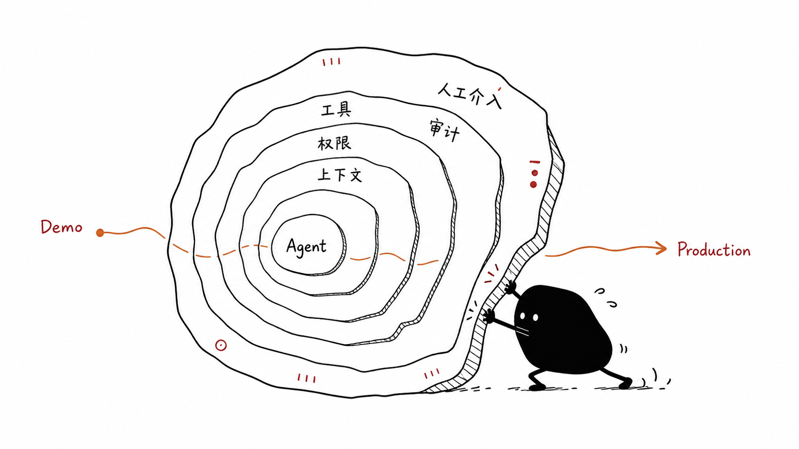
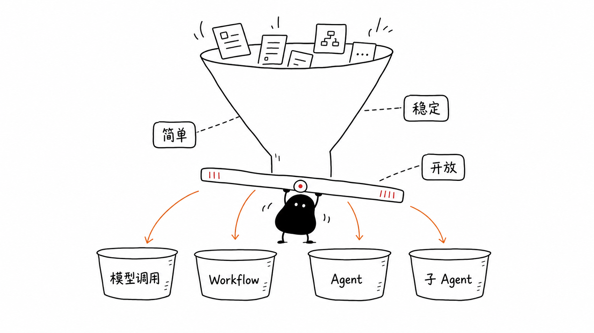

小红书转发卡 · 01
别只盯
模型榜
2026 上半年更值得看的变化：Agent 周围那层运行时，正在变厚。

核心判断Agent 从 demo 到生产，差的不是一句 prompt，而是一整套 运行系统。
Rednote Native + Editorial
2026 上半年更值得看的变化：Agent 周围那层运行时，正在变厚。

核心判断真正影响企业采用的，往往是模型外面这些不花哨的工程层。
角色、流程、协作界面、任务状态。
工具、权限、边界、爆炸半径。
API、CLI、MCP 不是信仰之争。
哪些常驻，哪些按需加载，哪些留给工具。
长期运行、状态、观测、恢复和多租户。
没有验证的 loop，只是在反复生成。
先判断任务到底需要什么：一次模型调用、稳定 workflow，还是动态 Agent。
